What is UFW?
UFW (Uncomplicated Firewall) is a firewall management tool available on Ubuntu and other Debian-based distributions. It provides a simple command-line interface on top of iptables (or nftables on newer kernels) for managing system-level firewall rules. Instead of writing iptables rules directly, UFW allows you to permit or block network traffic using simple and easy-to-understand commands.
First, we need to install UFW so we type:
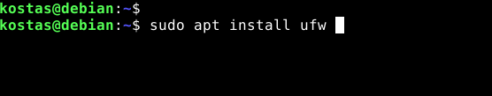
And the following command to check if it has been installed correctly and which version it has.
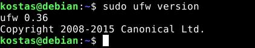
Before enabling UFW, we will set the default policies. This is important because the defaults determine what happens to network traffic that does not match any explicit rule. Deny all incoming connections and allow all outgoing connections.
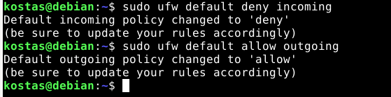
If you are connected via SSH, allow SSH traffic before enabling UFW. If you skip this step, you will be locked out of the server.
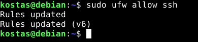
Now we enable UFW:
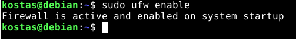
Now the firewall has been enabled and it will start automatically after a reboot.
We can check if the service is active with the following command:
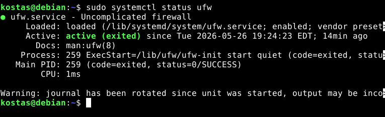
And to see the rules:
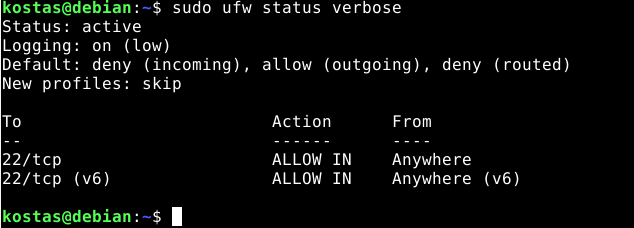
Now we will test to see if we have access to the web server that I have installed on the machine.
(NOTE: For more information about installing a web server, click here.)
We will notice that the connection times out, meaning that something appears to be blocking us.
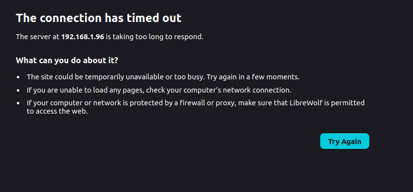
To allow access, we need to allow the ports for HTTP and HTTPS (although HTTP is enough for our simple server).
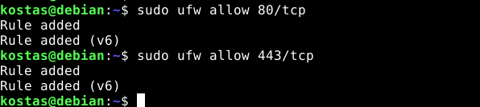
And now we can see that we are able to access the site.
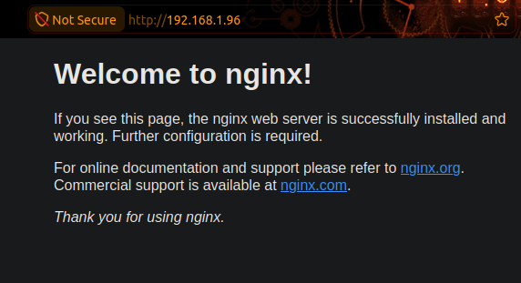
(NOTE: We can simply write the name of the service if we want, instead of the known protocols and ports, e.g. "sudo ufw allow http")
Now we will see how to block all traffic from a specific IP address. First, I will find the IP address of my host machine to see which IP I will block.
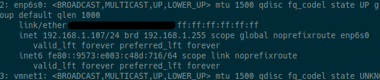
(it is 192.168.1.107)
And then we type the following:
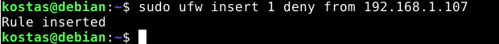
We notice that we do not have access.
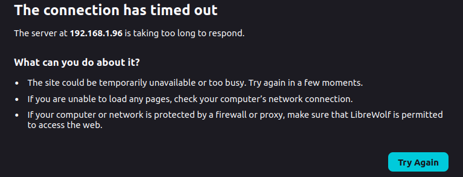
(NOTE: The reason we did not simply write "sudo ufw deny from 192.168.1.107" and used the insert option instead is because we want it to be the first rule that matches and not be placed after rules with allow.)
Let's also see our rules numbered.
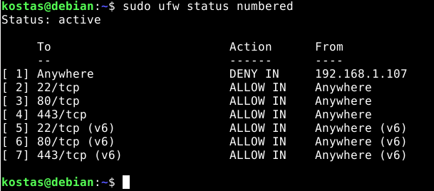
It's that all ?
UFW provides a simple way to manage firewall rules on Ubuntu/Debian servers. For production environments (production deployments), consider the following practices:
- Always define default policies (deny incoming, allow outgoing) before adding specific rules.
- Allow SSH before enabling UFW on remote servers. Getting locked out is very inconvenient.
- Use rate limiting on SSH (sudo ufw limit ssh/tcp) as the first line of defense against brute force attacks.
- If you use Docker, apply the DOCKER-USER chain fix. Docker bypasses UFW by default.
- Restrict database ports (3306, 5432, 6379) to specific IPs or subnets. Never expose them to the entire world.
- Enable logging at a medium level for good visibility without excessive noise.
- Regularly check the rules with sudo ufw status numbered and remove anything that is no longer needed.
For more information about UFW, click here.